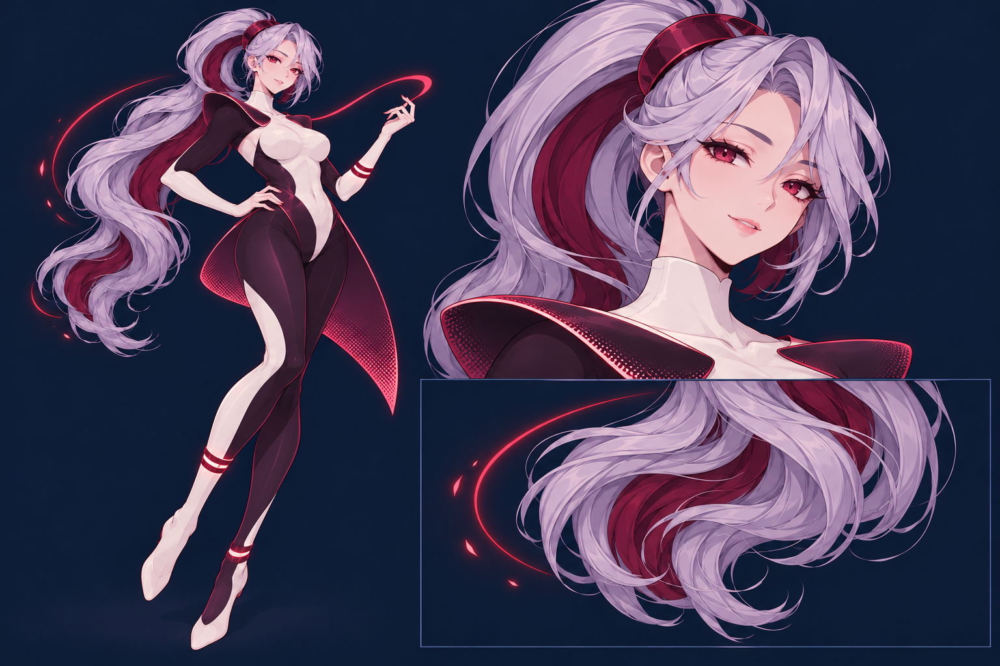

Сначала —
её характер.
Потом — весь мир.
Героиня в полный рост, без рамки поверх рабочего стола. Быстрое перемещение с красным следом, выразительный взгляд, спокойная уверенность.
Здесь можно посмотреть материалы и направление проекта. Это статичный эталон. Риг и настоящие body clips ещё не готовы. В Windows EXE уже есть desktop-окно и установка локального текстового ИИ; этот HTML остаётся просмотром материалов.
Материалы персонажа
Листы нужны для производства и сверки. Они не являются готовыми спрайтами или точной моделью. Пиксельная техника пока рассматривается.
План движений
Код приоритетов, прерываний и переключений уже есть. Художественные клипы и их связь с персонажем ещё предстоит сделать. Этот просмотр намеренно не заменяет их покачиванием цельной картинки.
Найти через браузер
Можно открыть обычный поиск. Чтение страниц, сравнение источников и ответ модели пока не подключены.
Нужен интернет. По кнопке запрос передаётся DuckDuckGo. Никакие изображения, файлы и разговоры автоматически не отправляются.
Что уже можно запустить
В исходниках Godot работают заметки, таймеры, настройки, три языка и передача поиска браузеру. Для запуска открыть project.godot в стандартном Godot 4.7.2 и нажать F5. Для будущего установщика ручная установка движка не планируется.